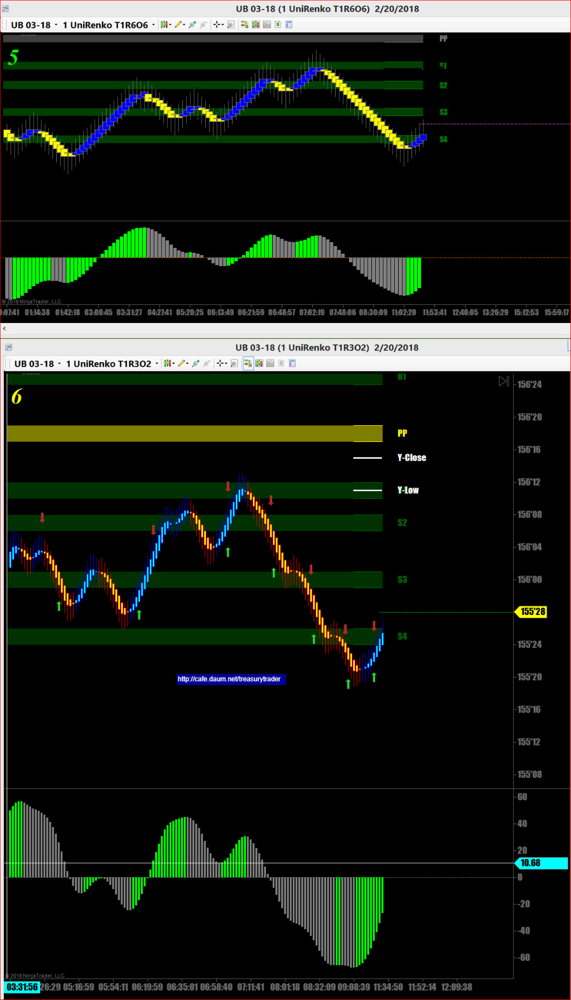
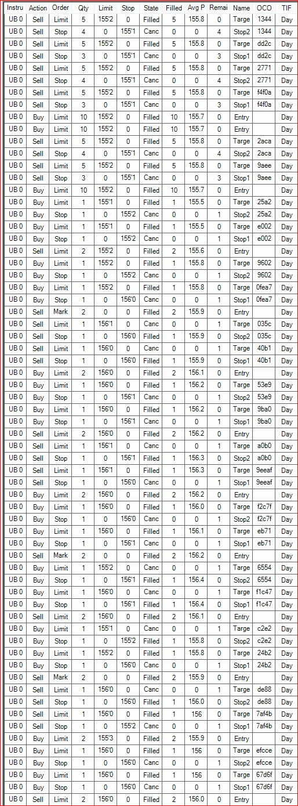
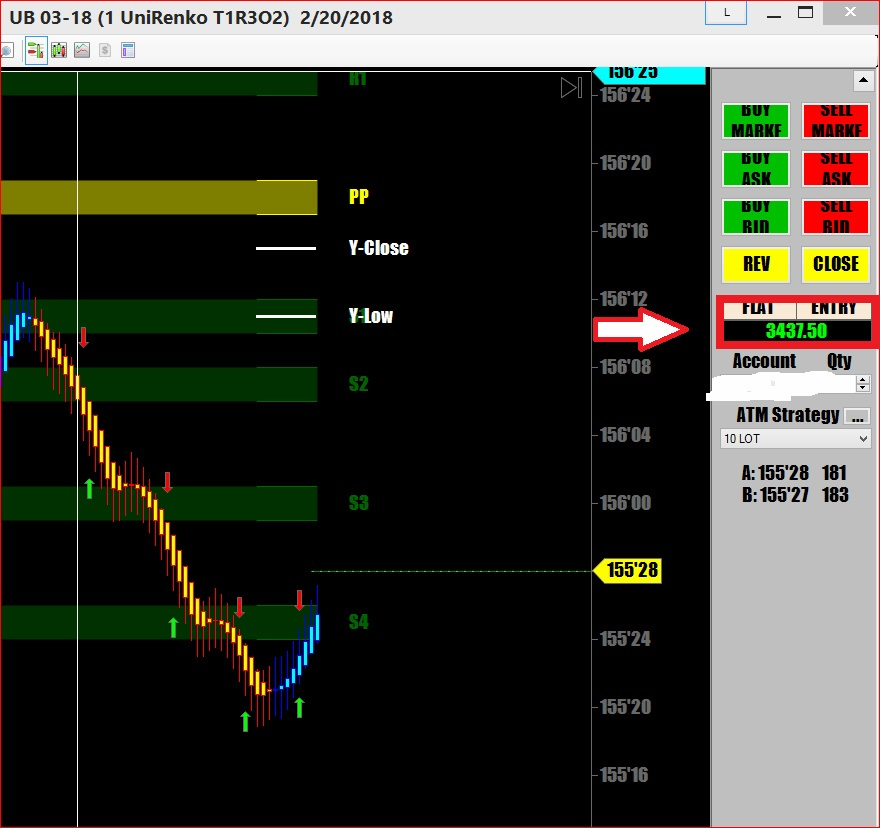

오늘은 UB를 초단타로 매매
총 7번 매매.
시간이 굉장히 빨리지나간것 같음.
크루드오일이나 금을 매매할 땐 항상 이런식으로 짧은 한마디만 먹고 나오는 초단타를 하는데
신경을 극도로 집중해야 해서 많이 피곤함.
챠트상에서 초록색 화살표가 매수고 빨간색 화살표가 매도임. 자동으로 표시됨
지금 가만보니까 조금 더 버텼으면 하는 자리가 몇개 있음..
하지만 발끝에서 꼭지까지 따먹기는 어려움. 신의 영역임
아래 챠트 쎗업은 초단타용 쎗업임
보시면 알겠지만 색깔 바뀌면 들어가고 나오는 간단무식한 쎗업임

매매기록임
엄청 많이했음..완전 노가다매매

결국 티끌모아 태산작전으로 일당 챙김

카지노에서 블랙잭을 할 때
항상 5달러씩 배팅을 하면 내가 딜러보다 더 많이 이겨야 돈을 딸 수 있다
그게 가능한가? 물론 불가능하다
매매에서도 마찬가지.
수익과 손실이 항상 같은 액수로 놓고 매매를 하면
이기는 매매가 손실매매보다 훨씬 많아야 누적수익이 올라갈 수 있다
하지만 매매방법을 바꿔서 손절은 4틱으로 잡고
수익은 5틱 이상이라고 본다면 반타작만해도 매일 수익으로 마감할 수 있다
수익은 본인의 매매기법이 얼마나 높은 승률을 가진 기법이냐가 아니라
매매방법에 있다는 것이다
손실날 땐 300불이고 수익나면 500불이다 치면 승률이 반반밖에 안되는 허접한 기법일지라도
누적수익률은 굉장해진다.
승률을 높이려 하지말고
10판에 6판만 이긴다는 마음으로 붙으면 된다
대신 손실은 적게 만들고 수익이 더 크게나는 그런 매매방법을 시도해야 한다
위 챠트에서 보는것처럼 색깔 바뀔때 들어가면 최소 3틱은 거의 100퍼센트 먹는다
3틱이지만 UB는 1틱에 $31.25 이기 때문에 수익이 괜찮음
나름대로 잘 연구해서 수익을 극대화하는 방법을 개발해내는것이 관건이다
만약 내 매매기법의 승률이 60%도 안된다면?
그것은 진입시점을 잘못하고 있거나 반대로 탄다는 증거이므로 기법을 빨리 바꿔야 함
세줄요약
무조건 이기는 매매만 하려고 하지마라 60%만 이기면 된다
손실은 적게 수익은 크게
그러기 위해서는 진입시점을 정확하게 보여주는 챠트셋팅이 필요하다